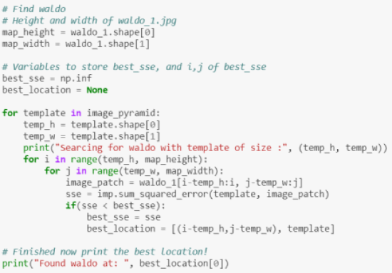

Where's Waldo?
So far, we've mostly focused on using imagery to do stuff for which it is better suited than a human: calculating camera locations from imagery, finding an optimal projective transform to stitch images together, and (soon) we'll be doing "structure from motion" in which we create 3D models of the world from collections of 2D images.
These are tasks primarily based around measuring things and doing calculations. On the other side of the coin is object recognition (identifying the semantic content of a scene), and the best contemporary computer vision algorithms do object recognition at roughly the level of a 2 year old human (with some exceptions).
For this (mini-)project, we're going to delve into a topic that sort of straddles the line between these two general realms of computer vision.
As a motivating example, did you ever play the game Where's Waldo. There are books filled with images like the following:
The objective, of course, is to find Waldo, the man in the red striped shirt and beanie wearing glasses. He looks like this:
These scenes are (obviously) intended to have a bunch of visual clutter to make this task reasonably challenging.
Your task will be to come up with an algorithm that locates the template image (Waldo's face) and the target image (the larger scene). This is called template matching, and it's a primitive form of feature recognition.
Implementation
Template Matching
Template matching works in a way that is very similar to filtering: slide the template image over every location in the target image, computing some sort of metric at each position. In practice, one commonly used choice for an error metric is the one that you've already used for matching keypoint descriptors: z-normalized sum square error. Another choice is normalized cross-correlation. Once these metrics have been computed, simply find the argmin (for SSE) or argmax (for NCC), and this will be the location of the best match.
Not so fast!!! What about scale!
Oh, no. As it turns out, the template I've provided is not the same scale as the Waldo in the image. To deal with this, you'll need to create an image pyramid for the template (See Szeliski 3.5, and Mubarak Shah's lecture on this topic). This essentially just means creating a sequence of downsampled images of the template, and trying each one in hopes that one of the resulting down-scaled templates matches the feature in the target image. Create a sequence of templates with which to perform feature matching, each one 1/2 the resolution of the previous (so 1/4 the total number of pixels). To avoid aliasing, before downsampling perform a σ=1 Gaussian Blur of the image. Once you've built your image pyramid, find the argmin/max in 3 dimensions (u,v,template scale).
Image Pyramids and Gaussian Reductions
 |
Finding Waldo :)
|  |